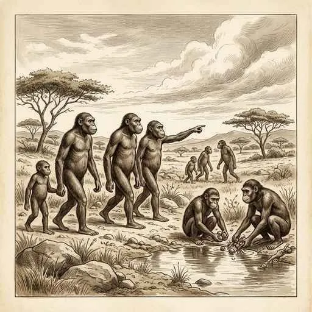
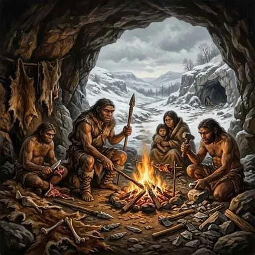
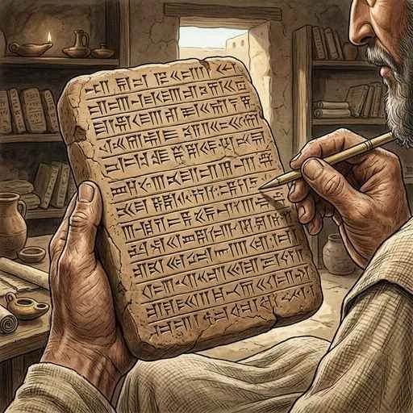
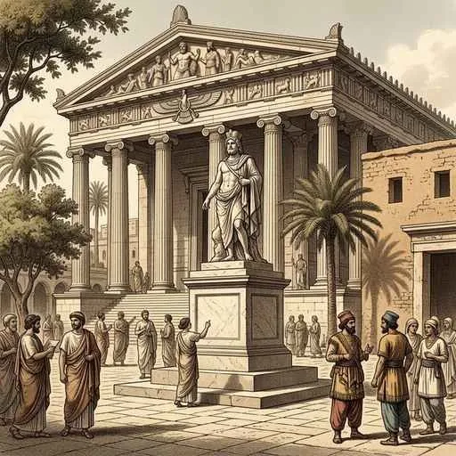

1. 文明の起こり
私たち人類の歴史は、今から約700万年以上も前にアフリカで始まりました。今回は、人類がどのように進化し、どのようなプロセスを経て世界各地に高度な「文明」を築き上げていったのか、その壮大なストーリーを分かりやすく解説します！
1. 人類の誕生と進化
人類は、他の動物とは異なる独自の進化を遂げました。その最大のきっかけが、直立二足歩行（真っ直ぐ立って2本足で歩くこと）を始めたことです。これにより前足が「手」として自由になり、道具を作ったり、脳が急速に発達したりすることになりました。
① 猿人（約700万年前〜）
現在発見されている中で最も古い人類の祖先を猿人（えんじん）と呼びます。代表例はアフリカで骨が発見されたアウストラロピテクスなどです。彼らはまだ脳が小さくチンパンジーに近かったですが、すでに直立二足歩行を始めていました。

図1：アフリカで発見された初期の人類「アウストラロピテクス」のイメージ
② 原人（約200万年前〜）
氷河期などの厳しい環境の変化に適応する中で、より進化した原人（げんじん）が登場します。代表例は北京原人やジャワ原人などです。彼らは火や言葉を使用し始め、寒さを防いだり、集団で協力して狩りを行ったりしました。この時代、石を打ち砕いて作った打製石器（だせいせっき）が使われ、この狩猟・採集を行っていた時代を旧石器時代と呼びます。

図2：火を使い、知恵を絞って過酷な環境を生き抜いた「北京原人」
③ 新人（約20万年前〜）
現在の人類の直接の祖先にあたるのが新人（しんじん／ホモ・サピエンス）です。フランスのクロマニョン人などが有名で、彼らはラスコー（フランス）やアルタミラ（スペイン）の洞窟に見事な動物の壁画を残しました。
2. 農耕のはじまりと四大文明の誕生
約1万年前に氷河期が終わり地球が温暖になると、人類はそれまでの「獲物を追いかける生活（狩猟・採集）」から、自ら食料を育てる「農耕・牧畜」へと生活様式をガラリと変えました。人々は定住し、石を磨いて形を整えた磨製石器（ませいせっき）や土器を使うようになりました。この時代を新石器時代と呼びます。
農耕が発展すると、人々は大河の周辺に集まって住むようになり、やがて国家が誕生して世界各地に巨大な文明が成立しました。これを「四大文明」と呼びます。
- エジプト文明（ナイル川）：ピラミッドの建設、ナイル川の氾濫期を知るための太陽暦、象形文字（ヒエログリフ）が特徴。
- メソポタミア文明（チグリス川・ユーフラテス川）：粘土板に刻んだ楔形文字（くさびがたもじ）、月の満ち欠けを基準にした太陰暦、60進法。
- インダス文明（インダス川）：計画都市モヘンジョ・ダロ、インダス文字。
- 中国文明（黄河・長江）：青銅器、亀の甲羅や獣の骨に刻んで占いに使った甲骨文字（漢字の起源）、最古の王朝とされる「殷（いん）」。

図3：メソポタミア文明で粘土板に刻まれた「楔形文字」
3. 宗教の起こりとヘレニズム文化
国家が大きくなり社会が複雑になると、人々の心の支えや社会の秩序を保つために様々な宗教や思想が生まれました。 インドではシャカ（釈迦）が仏教を開き、パレスチナではイエスがキリスト教を説きました。また、中国では孔子（こうし）が道徳や礼儀を重視する「儒教（儒学）」を説きました。
また、紀元前4世紀には、マケドニアのアレクサンドロス大王が東方へ遠征を行い、ギリシャ文化とオリエント文化が結びついたヘレニズム文化が生まれました。この文化は、のちにインドの仏像彫刻や、日本の阿修羅像などの仏教美術にも大きな影響を与えることになります。

図4：東西の文化が融合して生まれた「ヘレニズム文化」の彫刻イメージ
🔥 この単元のテスト対策・暗記のコツ
テストでは「**人類の進化の順番**（猿人 ➔ 原人 ➔ 新人）」と、「**四大文明とそれぞれの川・文字・暦のペア**」が非常によく狙われます！
例えば、「エジプト＝ナイル川＝象形文字＝太陽暦」「メソポタミア＝チグリス・ユーフラテス川＝楔形文字＝太陰暦」のように、ノートに表にしてセットで暗記するのが効果的です！